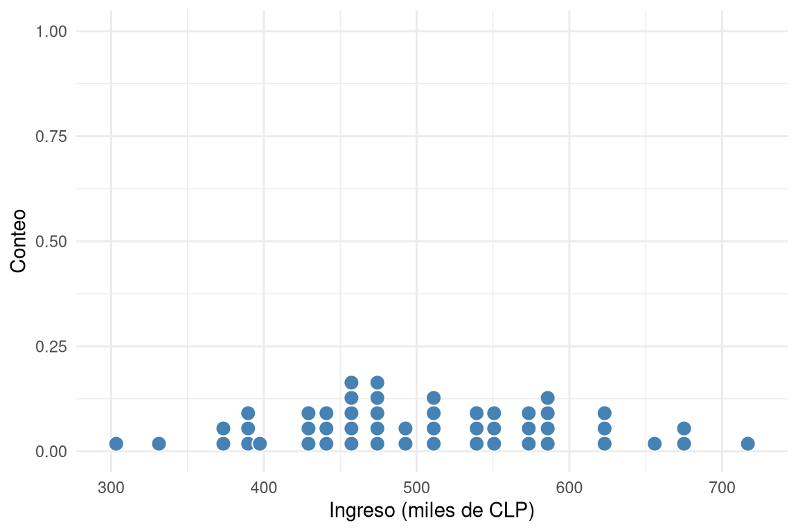
Lección 6: Exploración de datos numéricos
EPDI
Resumen de técnicas para describir y visualizar variables numéricas: gráficos (dispersión, puntos, histogramas, caja), medidas de centro y dispersión, forma de la distribución, valores atípicos y estadísticos robustos.
Resumen
Esta lección repasa y profundiza los conceptos esenciales para analizar datos numéricos: cómo visualizarlos (scatterplots, dot plots, histogramas, box plots), cómo describir su centro (media, mediana), su variabilidad (desviación estándar, rango intercuartil), su forma (simetría, asimetría, modas) y cómo identificar valores atípicos. Se enfatiza la interpretación y la elección de estadísticos robustos frente a sensibles.
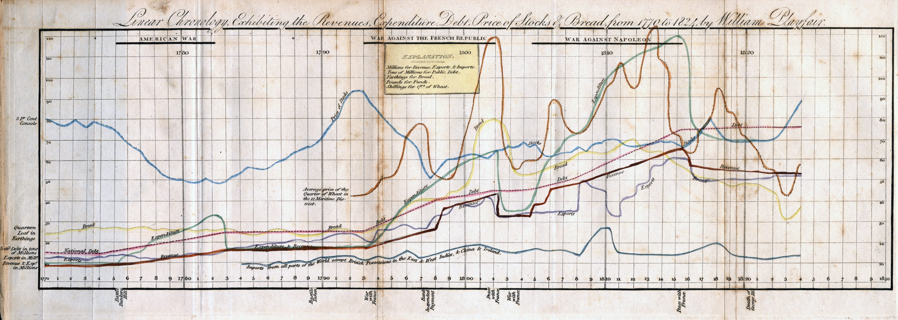
1 Objetivos de la lección
Al finalizar esta lección, los estudiantes serán capaces de:
- Elegir el gráfico adecuado (dispersión, puntos, histograma, caja) según el tipo de variable y el objetivo del análisis.
- Calcular e interpretar la media, mediana, desviación estándar y rango intercuartil (IQR).
- Describir la forma de una distribución (simétrica, asimétrica a derecha/izquierda, unimodal, bimodal).
- Identificar valores atípicos mediante el criterio de \(1.5 \times IQR\) y explicar por qué a veces es útil transformar los datos.
- Distinguir entre estadísticos robustos (mediana, IQR) y no robustos (media, desviación estándar) y elegir cuál usar según la presencia de asimetría o valores extremos.
2 Visualización de una variable numérica
2.1 Gráfico de puntos (dot plot)
El gráfico de puntos muestra cada observación como un punto sobre una línea. Es útil para conjuntos pequeños porque no oculta valores y permite ver la densidad de los datos. Si se apilan puntos idénticos, se obtiene un dot plot apilado, que facilita ver la frecuencia de valores repetidos.
2.2 Histograma
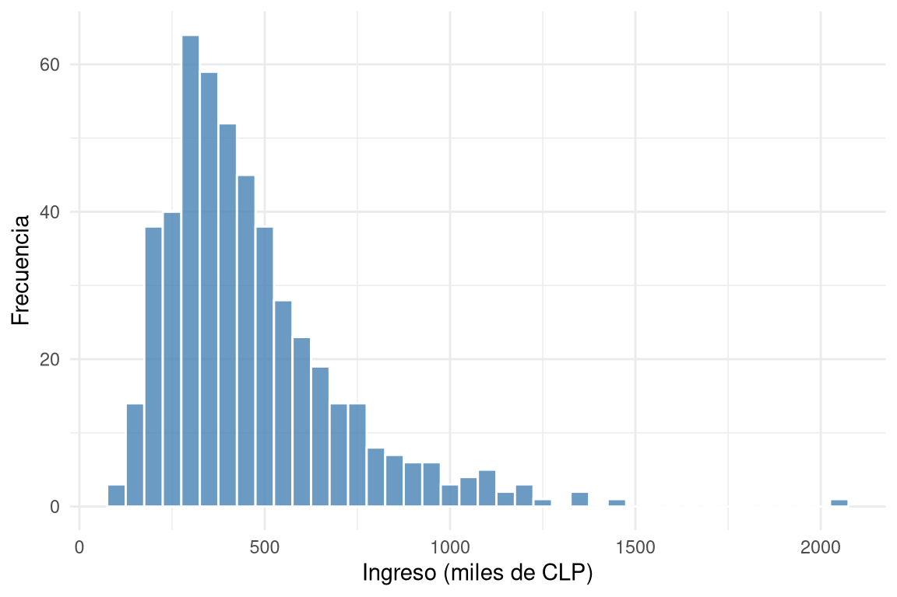
El histograma agrupa los datos en intervalos (bins) y dibuja barras cuya altura representa la cantidad de observaciones en cada intervalo. Es ideal para muestras grandes y para apreciar la forma general de la distribución: simétrica, asimétrica a la derecha (cola larga hacia valores altos) o a la izquierda (cola larga hacia valores bajos). También permite identificar modas: unimodal (un pico prominente), bimodal (dos picos) o multimodal (más de dos picos).
2.3 Diagrama de caja (box plot)
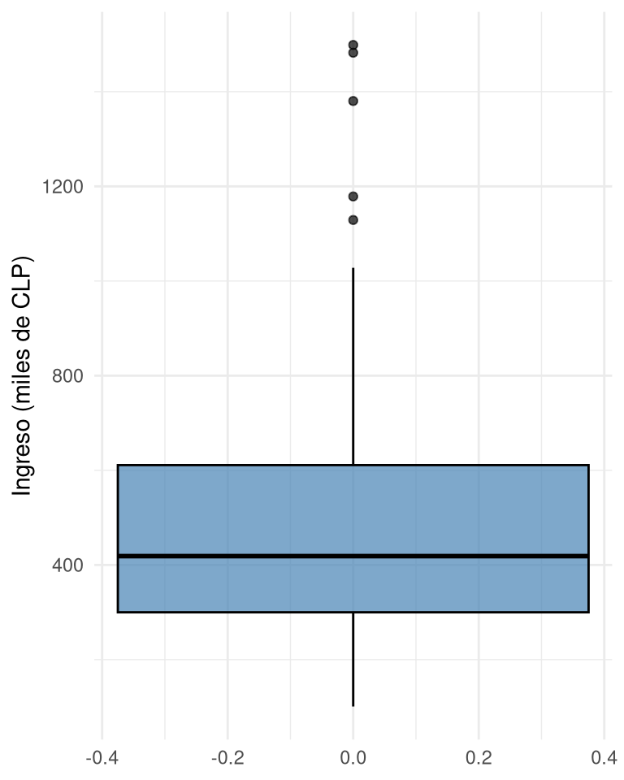
El diagrama de caja resume cinco estadísticos: mínimo (o límite inferior de los bigotes), primer cuartil (\(Q_1\)), mediana, tercer cuartil ((Q_3)) y máximo (o límite superior de los bigotes). La caja contiene el 50% central de los datos. Los bigotes se extienden hasta el valor más extremo que no supere \(1.5 \times IQR\) desde los cuartiles. Los puntos más allá de los bigotes se consideran valores atípicos (outliers).
El box plot es muy útil para comparar distribuciones de varios grupos y para identificar rápidamente la presencia de asimetría y valores extremos.
2.4 Diagrama de dispersión (scatterplot)
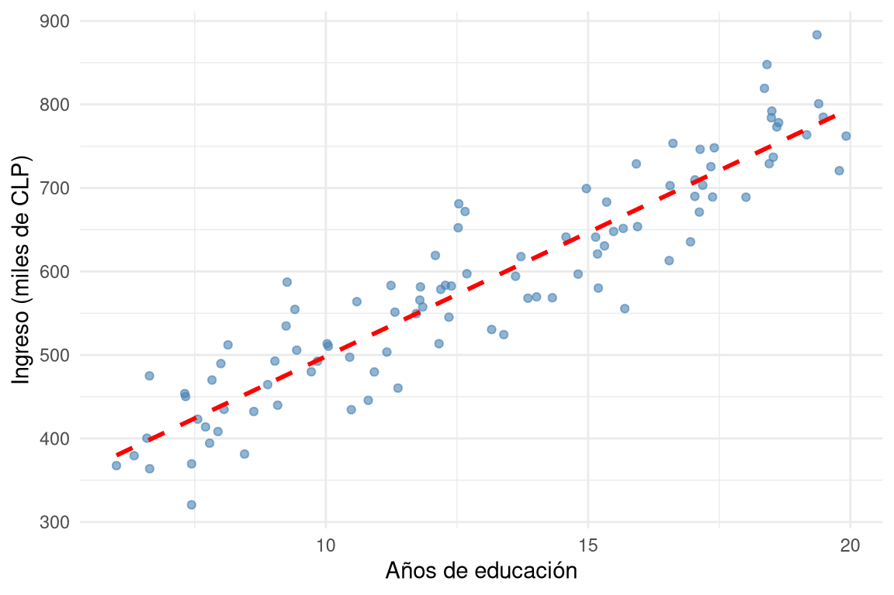
Cuando se tienen dos variables numéricas, el diagrama de dispersión es la herramienta principal. Cada punto representa un caso (individuo). Permite observar la dirección (positiva, negativa o nula), la fuerza y la forma (lineal, curvilínea, etc.) de la relación entre ambas variables.
3 Medidas de centro
3.1 Media (\(\bar{x}\))
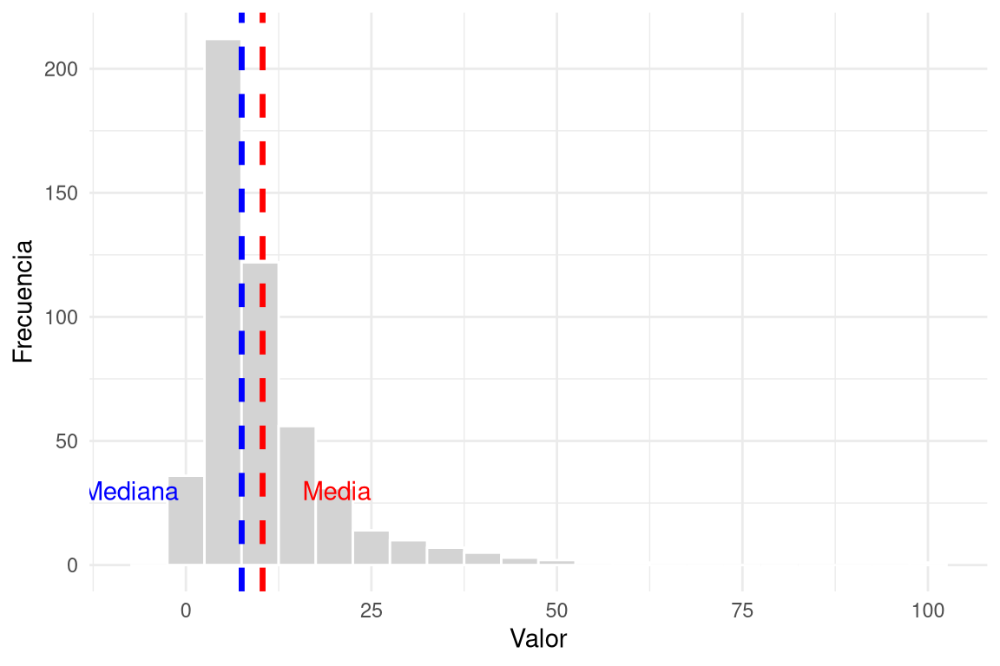
La media aritmética es la suma de todos los valores dividida por el número de observaciones. Es sensible a valores extremos (outliers) y a la asimetría de la distribución. Se representa con \(\bar{x}\) para una muestra y con \(\mu\) para la población.
3.2 Mediana (\(M\))
La mediana es el valor central cuando los datos se ordenan de menor a mayor. Si hay un número par de observaciones, se promedian los dos centrales. La mediana es robusta: no se ve afectada por outliers ni por asimetrías extremas. Por ello, cuando la distribución es asimétrica, la mediana suele ser una mejor representación del “valor típico” que la media.
4 Medidas de dispersión
4.1 Desviación estándar (\(s\))
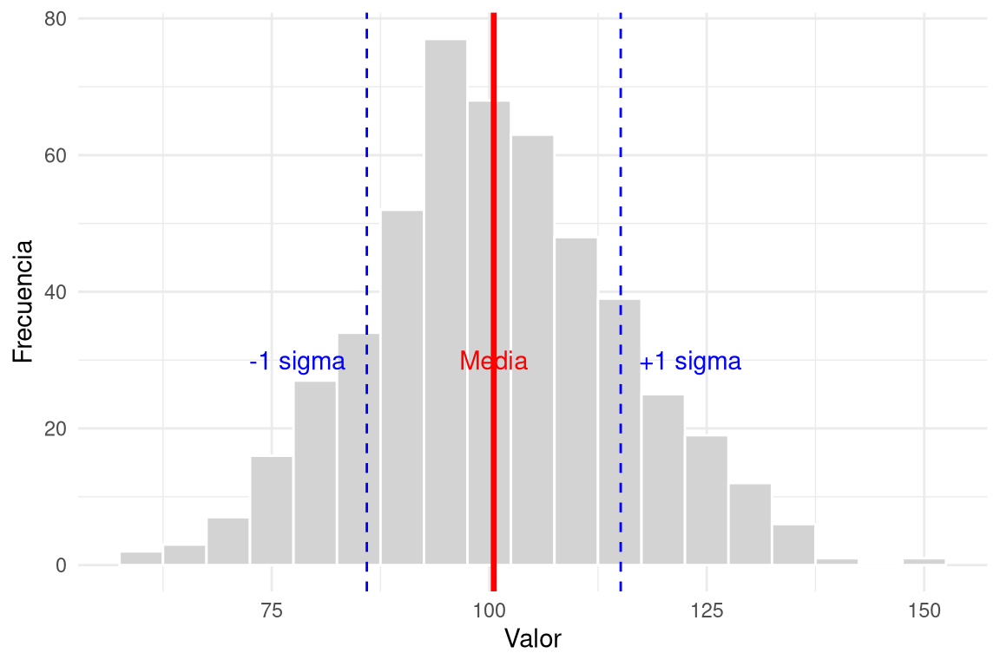
La desviación estándar mide la distancia típica de las observaciones respecto a la media. Se calcula como la raíz cuadrada de la varianza (\(s^2\)), que es el promedio de los cuadrados de las desviaciones respecto a la media (dividiendo por (n-1) en una muestra). Al igual que la media, la desviación estándar es sensible a outliers y a la asimetría.
4.2 Rango intercuartil (IQR)
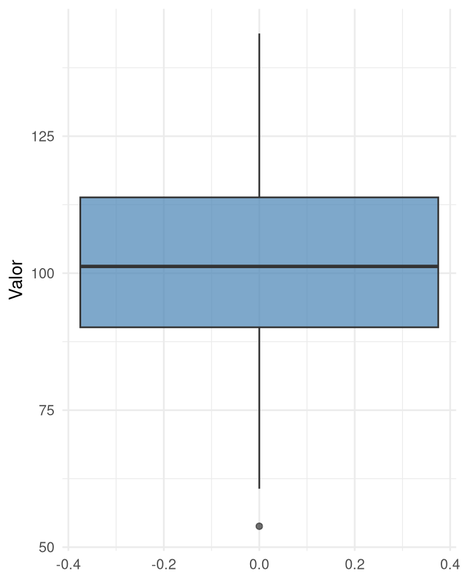
El IQR es la distancia entre el tercer y el primer cuartil (\(IQR = Q_3 - Q_1\)). Representa la dispersión del 50% central de los datos. Es robusto porque no se ve influido por valores extremos. Se usa también para detectar outliers: se considera atípico cualquier valor menor que \(Q_{1} - 1.5 \times IQR\) o mayor que \(Q_{3} + 1.5 \times IQR\).
5 Forma de la distribución
La forma de una distribución se describe mediante:
- Asimetría (skewness):
- Sesgada a la derecha (cola larga hacia la derecha): media > mediana.
- Sesgada a la izquierda (cola larga hacia la izquierda): media < mediana.
- Simétrica: media ≈ mediana.
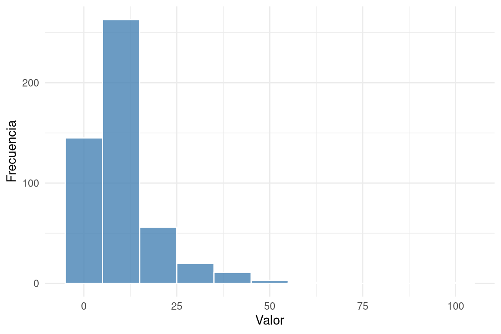
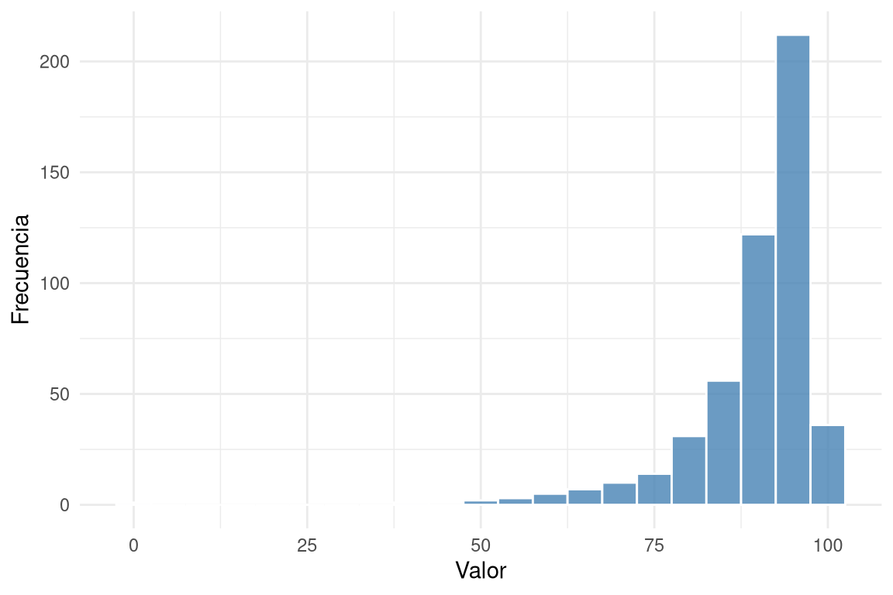
- Modalidad:
- Unimodal: un pico claro.
- Bimodal: dos picos.
- Multimodal: más de dos picos.
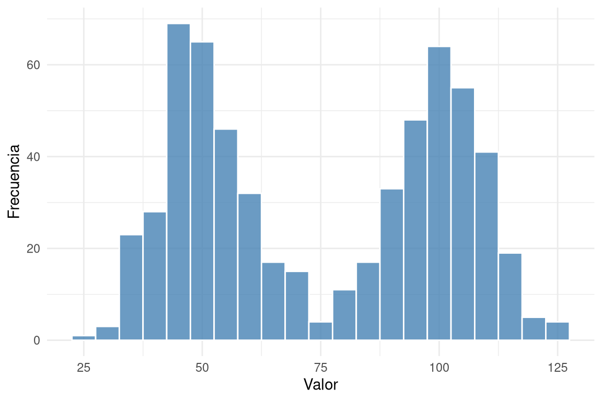
Conocer la forma ayuda a decidir qué estadísticos usar y si es necesario transformar los datos (por ejemplo, aplicar logaritmo para reducir la asimetría derecha).
6 Valores atípicos (outliers) y estadísticos robustos
Un valor atípico es una observación que se aleja notablemente del resto. Puede deberse a errores de medición, a una rareza genuina o a la naturaleza de la variable. En cualquier caso, es importante identificarlos porque pueden distorsionar la media y la desviación estándar.
- Estadísticos robustos (resistentes a outliers): mediana, IQR.
- Estadísticos no robustos (sensibles a outliers): media, desviación estándar.
En presencia de outliers o asimetría fuerte, se recomienda usar la mediana y el IQR para describir el centro y la dispersión típicos.
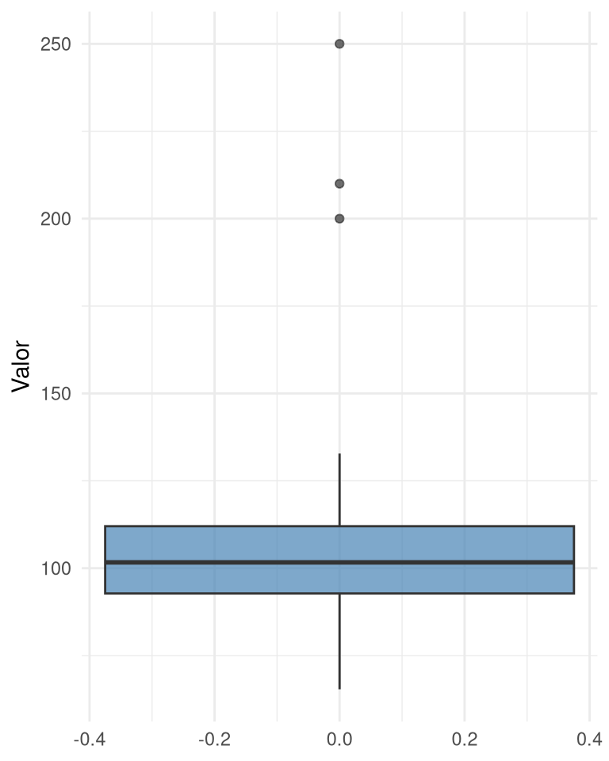
7 Transformaciones y mapas de intensidad
Cuando una variable tiene una asimetría muy pronunciada (por ejemplo, población de condados), aplicar una transformación como el logaritmo (base 10) puede convertir la distribución en aproximadamente simétrica, facilitando su modelización y visualización. También se pueden transformar una o ambas variables en un diagrama de dispersión para revelar patrones ocultos.
Los mapas de intensidad (mapas coropléticos) representan valores de una variable numérica sobre un mapa geográfico mediante colores. Son muy útiles para detectar patrones espaciales (ej. regiones con alta pobreza o bajo ingreso).
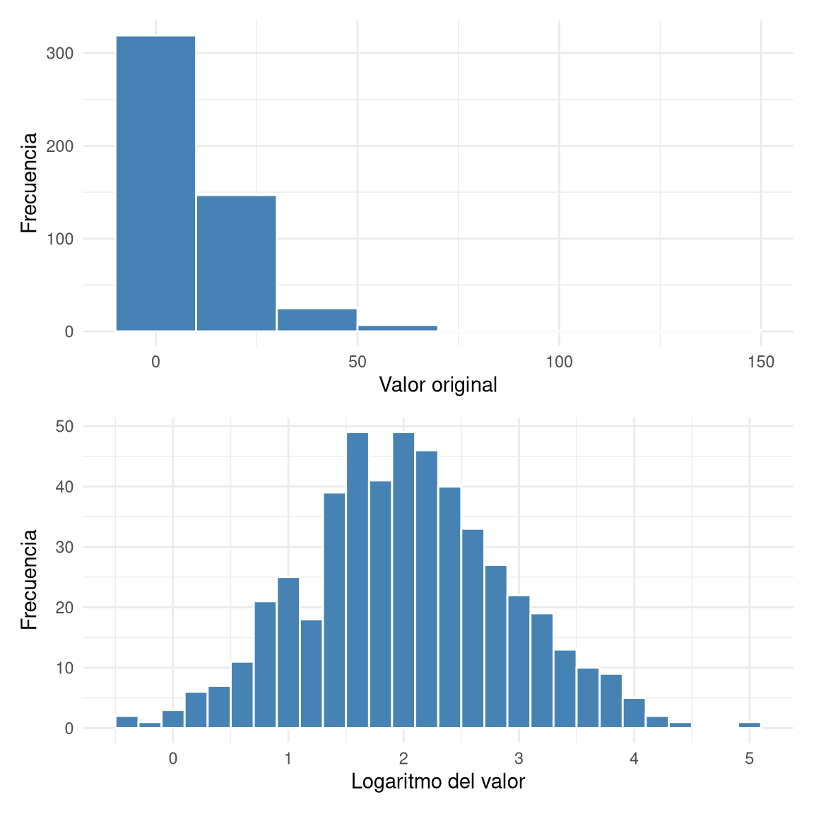
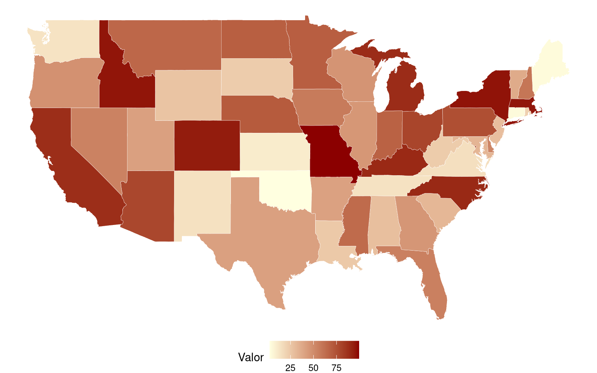
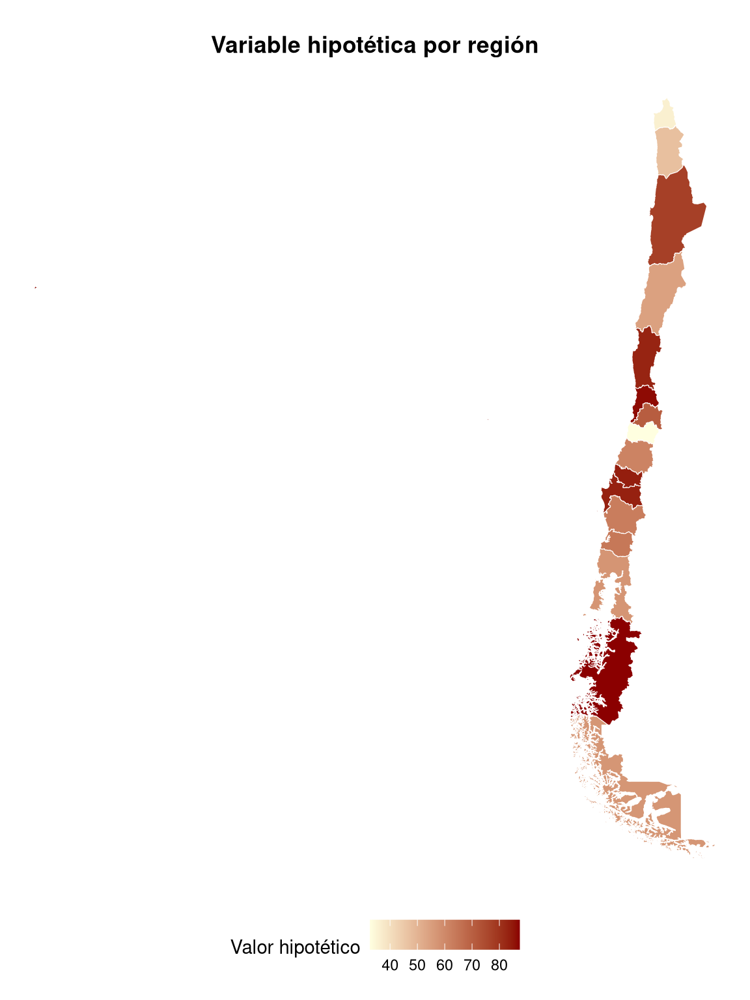
8 Material de apoyo y reforzamiento
Para complementar tu estudio, aquí tienes recursos adicionales, esta vez centrados en ejemplos propios de la ingeniería. A través de ellos podrás ver cómo los conceptos de diseño experimental, placebo y sistemas complejos se aplican en contextos tecnológicos y de simulación.
8.1 Mapa mental
Para consolidar los conceptos de la lección, aquí tienes un mapa mental que integra visualmente los principales temas tratados: visualización, centro, dispersión, forma, valores atípicos y estadísticos robustos.
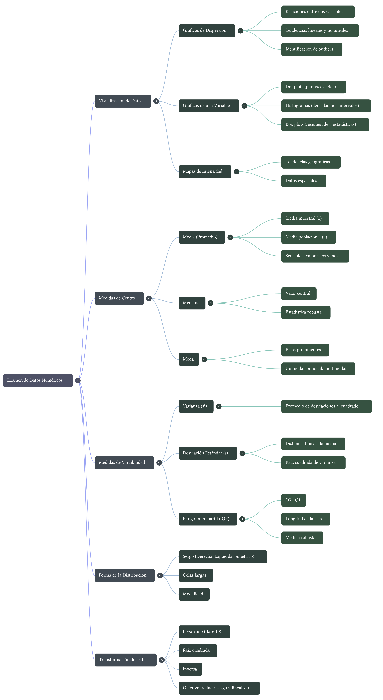
8.2 Documento PDF
El siguiente documento aborda el diagnóstico de sistemas complejos desde una perspectiva ingenieril, ideal para entender cómo se planifican experimentos en entornos con múltiples variables interactuantes.
8.3 Video complementario
Este video retoma el dilema ético del placebo en el quirófano, pero ahora analizado desde la ingeniería biomédica y el diseño de dispositivos médicos. Resulta especialmente útil para reflexionar sobre cómo los principios de cegamiento y grupo de control se trasladan a la experimentación tecnológica.
9 Cuestionario Grupal (Portafolio): Lección 6 Exploración de datos numéricos
Comparación de centro y dispersión Se tienen dos conjuntos de datos: A = {3, 5, 6, 7, 9} B = {3, 5, 6, 7, 20} Calcula mentalmente (o con cálculos simples) la mediana y la media de cada conjunto. Explica cómo la presencia del valor 20 en B afecta a la media y a la mediana. ¿Qué medida de centro recomendarías para describir un conjunto como B? ¿Por qué? ¿Qué ocurre con la desviación estándar y el IQR al comparar A con B? ¿Cuál de las dos medidas de dispersión es más robusta? Argumenta.
Interpretación de un histograma El histograma de la Figura 17 muestra la distribución de los ingresos mensuales (en miles de pesos) de los habitantes de una comuna. La mayoría de los ingresos se concentran entre 300 y 800, pero hay una cola larga hacia la derecha que llega hasta 2500. Basándote únicamente en esta descripción, ¿esperarías que la media sea mayor o menor que la mediana? ¿Por qué? ¿Qué medida de centro usarías para informar el “ingreso típico” de la comuna? Justifica. Si además se sabe que hay algunos ingresos negativos (por errores de digitación), ¿cómo afectaría eso a la media y a la mediana? ¿Qué harías con esos valores?
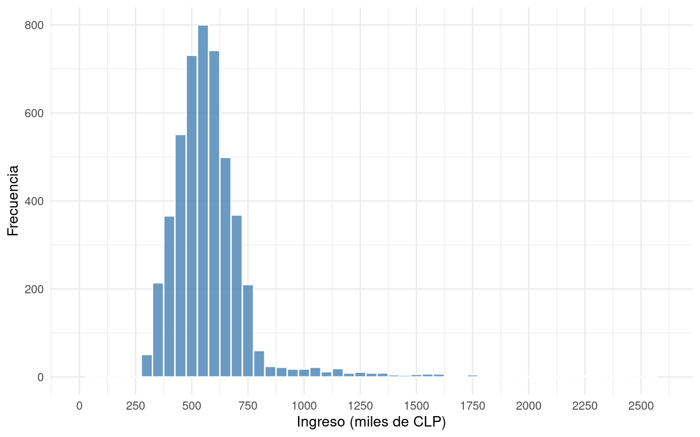
Detección de outliers mediante box plot Se ha construido un diagrama de caja para las edades de los participantes de un estudio. El box plot muestra: \(Q_1 = 25\) años, mediana = 32 años, (Q_3 = 40) años. El bigote inferior llega hasta 18 años y el superior hasta 58 años. Además, hay dos puntos señalados como outliers: uno a los 12 años y otro a los 82 años.
- Calcula el IQR y los límites para considerar un valor atípico. Verifica que efectivamente 12 y 82 son outliers según el criterio de \(1.5 \times IQR\).
- ¿Qué significado práctico podría tener que haya un participante de 12 años en un estudio de adultos? ¿Y uno de 82 años? ¿Descartarías esos valores automáticamente? ¿Por qué sí o por qué no?
Forma de la distribución y elección de estadísticos Se quiere analizar el número de horas semanales que estudiantes de enseñanza media dedican a usar redes sociales. Se sospecha que la mayoría dedica pocas horas (entre 0 y 5), algunos dedican entre 6 y 15, y unos pocos dedican más de 20 horas. ¿Qué forma esperarías que tenga esta distribución? Dibuja mentalmente su forma. ¿Recomendarías usar la media o la mediana para resumir el centro? ¿Y la desviación estándar o el IQR para la variabilidad? Explica en cada caso tu razonamiento, vinculándolo con la robustez de los estadísticos.
Aplicación de transformación logarítmica En un estudio sobre ingresos de hogares en Chile, se obtiene una distribución fuertemente sesgada a la derecha, con unos pocos hogares de ingresos extremadamente altos. Los investigadores deciden aplicar una transformación logarítmica (base 10) a los datos.
- ¿Qué efecto tendrá esta transformación sobre la forma de la distribución? ¿Por qué es útil?
- Después de la transformación, ¿cómo se interpretaría la media de los log‑ingresos? ¿Podrías convertirla de nuevo a la escala original (por ejemplo, promediando los antilogaritmos)? ¿Por qué sí o por qué no?
- ¿Qué ventaja tiene analizar los datos transformados cuando se quiere ajustar un modelo estadístico?
Nota final: Aunque en esta lección no hemos utilizado R, todos estos conceptos se aplican directamente en el análisis de datos reales. En las próximas sesiones pondremos en práctica estas ideas con conjuntos de datos concretos.